Problemas encontrados

2.3 Milhões Afetados
As enchentes no Rio Grande do Sul expuseram a vulnerabilidade nacional diante de desastres climáticos."

Sistemas Desconectados
Brasil carece de sistemas integrados que conectem previsão, alerta e evacuação em uma resposta coordenada.

Municípios Desprotegidos
Maioria dos municípios brasileiros opera sem sistemas automatizados de defesa civil.